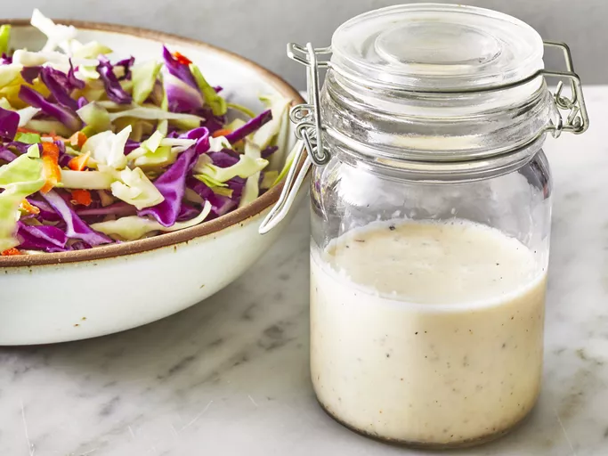

Coleslaw Recipe

A creamy coleslaw dressing that can be made with ingredients you already have! You can pour it immediately over
a 14-ounce package of coleslaw mix or refrigerate until needed.
With minimal ingredients and prep work, this top-rated coleslaw dressing is your new summer potluck secret — but
don't take it from us, take it from over 1,500 reviewers who gave it a five-star rating. You can shred your own
cabbage and carrots or transform store-bought coleslaw mix into a refreshing and creamy side dish with this
dressing.
Ingredients
- Mayonnaise
- Sugar
- Lemon Juice
- Vinegar
- Salt and Pepper
Steps
- Gather all ingredients.
- Whisk mayonnaise, sugar, lemon juice, vinegar, pepper, and salt together in a bowl until smooth and creamy.
- Store in an airtight container.